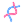

TSK-1391 · The neon 3D spinner set is every loading indicator
Owner, 2026-10-07: keep these 16 designs, use them for the left side bar and waiting on a turn, for downloading updates and anything else in the app that takes time; random, except the same session on the left and in its working line has the same spinner.
How it works
WorkingSpinner.svelte picks a design once per instance with pickSpinner(seed). A session's ownedId is the seed for its rail row, its transcript working line and its pending first message; everything else is random.
Only the chosen SVG is loaded (lazy raw import), into a box already reserved at its size. Ids are suffixed per instance so many spinners can share a page.
The animation is SMIL inside the SVG. It is paused off screen, while the window is hidden and under reduced motion, and runs only while its work runs: an idle app has no spinner in the page.
The old animations (rotating Lucide loaders, CSS ring spinners, the plan step arc, pulsing loading text) are deleted.
The SVGs are generated by tauri-svelte-preview/scripts/generateNeonSpinners.ts.
Where they appear (mockup)
Rail row · session AThinking… · session A working line

Reading the commit history…
The 16 designs (64 px, then 16 / 14 px, then 14 px on light)